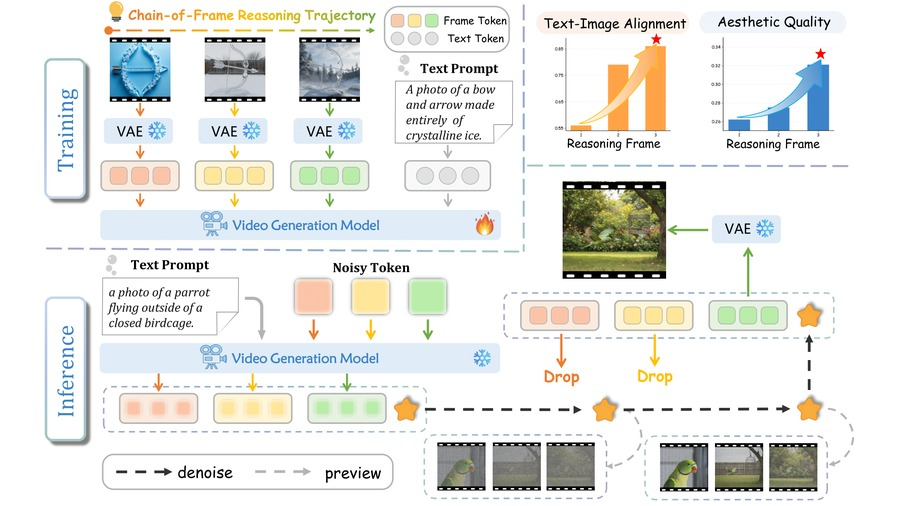
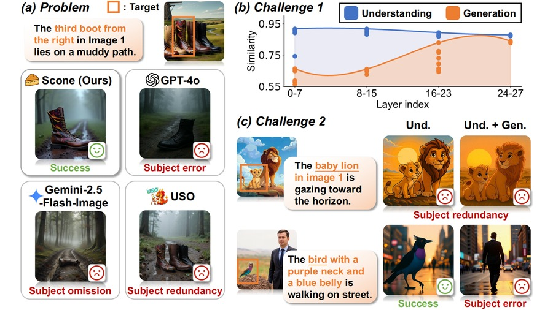
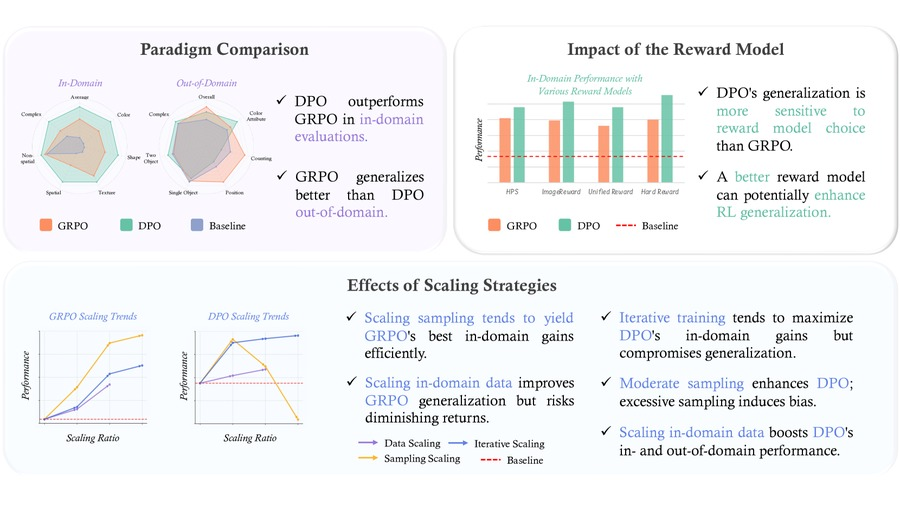
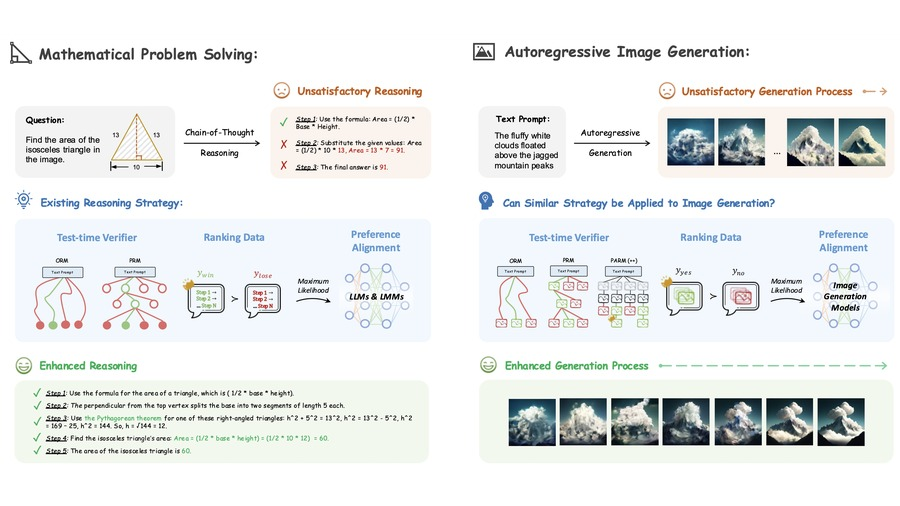

Biography
I am an incoming master student at Peking University, where I am co-supervised by Wentao Zhang and Weinan E at AAIS. I also closely work with Renrui Zhang.
Since June 2025, I have been a research intern at Kuaishou Kling AI. Previously, my work mainly focused on text-to-image (T2I) generation. I am now most interested in World Action Models (WAM) and a broader question: how AGI can move from the digital world into the physical one. My long-term goal is to build a recursive improvement flywheel in the physical world: use AGI to create better robots, then use those robots to accelerate the experiments, data, and manufacturing that create the next generation of robots and intelligence.
AGI and the Physical World
I think not only about how AGI can serve people, but also about how it can improve the systems that create intelligence itself. Robots are the missing interface: they can turn intelligence into physical experimentation and production.
Education
-
 Peking University (2026.09-2028.09) M.S. in Mathematics
Peking University (2026.09-2028.09) M.S. in Mathematics
- Xidian University (2022.09-2026.06) B.Eng. in Artificial Intelligence
News
[06.2026] Scone was accepted by CVPR 2026 as a Highlight paper.
[05.2026] CoF-T2I was accepted by ICML 2026.
[09.2025] Delving into RL for Image Generation with CoT was accepted by NeurIPS 2025.
[06.2025] Let's Verify and Reinforce Image Generation Step by Step appeared at CVPR 2025.
[01.2025] MAVIS was accepted by ICLR 2025.
CURRENT THESES
What I’m Thinking About
Two connected ideas guide what I want to build: intelligence should improve its own production loop, and embodiment is what closes that loop in the physical world.
The Iteration Flywheel
Automation reproduces the same output to a fixed standard. Intelligence is different: what it produces can keep improving, and each generation becomes an input to the next.
Math and coding have advanced quickly because they offer scalable, verifiable rewards. Coding adds a recursive advantage: better coding agents help build the next generation of models, which in turn produce still better coding agents.
I want to bring this flywheel into physical production: AGI builds better robots; those robots expand experimentation and manufacturing; that capacity helps build the next generation. Build robots that help build better robots.
Embodiment Is a Precondition for AGI
Embodiment is usually framed as a downstream application of AGI. I see it as part of the path to AGI itself, for three reasons:
- Compute is physically constrained. Fabs, power plants, and data centers turn intelligence into more compute; without physical labor, that recursive loop breaks.
- Science is bottlenecked by experiments. In biology, chemistry, and materials, an AGI without hands still depends on human experimental throughput.
- Continual learning needs a world that acts back. The physical world offers an open-ended curriculum of perception, action, consequence, and recovery.
Publications
Selected publications/preprints

CoF-T2I: Video Models as Pure Visual Reasoners for Text-to-Image Generation

Scone: Bridging Composition and Distinction in Subject-Driven Image Generation via Unified Understanding-Generation Modeling
- Yuran Wang*, Bohan Zeng*, Chengzhuo Tong, Wenxuan Liu, Yang Shi, Xiaochen Ma, Hao Liang, Yuanxing Zhang, Wentao Zhang
- IEEE/CVF Conference on Computer Vision and Pattern Recognition, 2026. Highlight.
- [Paper]

Delving into RL for Image Generation with CoT: A Study on DPO vs. GRPO
- Chengzhuo Tong, Ziyu Guo, Renrui Zhang, Wenyu Shan, Xinyu Wei, Zhenghao Xing, Hongsheng Li, Pheng-Ann Heng
- Conference on Neural Information Processing Systems, 2025.
- [Paper]

Let's Verify and Reinforce Image Generation Step by Step
- Renrui Zhang*, Chengzhuo Tong*, Zhizheng Zhao*, Ziyu Guo*, Haoquan Zhang, Manyuan Zhang, Jiaming Liu, Peng Gao, Hongsheng Li
- IEEE/CVF Conference on Computer Vision and Pattern Recognition, 2025.
- [Paper]
Let’s Connect
I’m always happy to discuss AGI, embodied intelligence, World Action Models, and how self-improving systems can move from digital reasoning into physical action. If these questions resonate with you, feel free to reach out by email or WeChat.